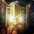
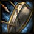
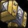
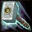
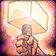

Übersicht
Vergeltung ist ein unkomplizierter, sicherer Solo-Build. Eine starke Zweihandwaffe, Siegel und Richturteil tragen den Schaden; du kannst dich heilen und im Notfall mit defensiven Cooldowns überleben.
Stärken
Sehr sicher dank Rüstung und Selbstheilung
Gute Gruppennützlichkeit durch Segen und Auren
Auch Tank/Heiler in 5er-Gruppen möglich
Worauf du achten solltest
Talentroute 1–60
Der Plan zeigt deine Punkte pro Stufe. Zum finalen Nachskillen gelten immer die aktuellen Talente im Live-Client.
Alle drei Talentbäume – ungeskillte Talente sichtbar



Talentpunkte pro Stufe
| Stufe | Talent | Baum |
|---|---|---|
| 10 | Verbesserter Segen der Macht 1/5 | Vergeltung |
| 11 | Verbesserter Segen der Macht 2/5 | Vergeltung |
| 12 | Verbesserter Segen der Macht 3/5 | Vergeltung |
| 13 | Verbesserter Segen der Macht 4/5 | Vergeltung |
| 14 | Verbesserter Segen der Macht 5/5 | Vergeltung |
| 15 | Segnung 1/5 | Vergeltung |
| 16 | Segnung 2/5 | Vergeltung |
| 17 | Segnung 3/5 | Vergeltung |
| 18 | Segnung 4/5 | Vergeltung |
| 19 | Segnung 5/5 | Vergeltung |
| 20 | Verbessertes Richturteil 1/2 | Vergeltung |
| 21 | Verbessertes Richturteil 2/2 | Vergeltung |
| 22 | Überzeugung 1/5 | Vergeltung |
| 23 | Überzeugung 2/5 | Vergeltung |
| 24 | Überzeugung 3/5 | Vergeltung |
| 25 | Überzeugung 4/5 | Vergeltung |
| 26 | Überzeugung 5/5 | Vergeltung |
| 27 | Siegel des Befehls 1/1 | Vergeltung |
| 28 | Streben nach Gerechtigkeit 1/2 | Vergeltung |
| 29 | Streben nach Gerechtigkeit 2/2 | Vergeltung |
| 30 | Zweihandwaffen-Spezialisierung 1/3 | Vergeltung |
| 31 | Zweihandwaffen-Spezialisierung 2/3 | Vergeltung |
| 32 | Zweihandwaffen-Spezialisierung 3/3 | Vergeltung |
| 33 | Vergeltung 1/5 | Vergeltung |
| 34 | Vergeltung 2/5 | Vergeltung |
| 35 | Vergeltung 3/5 | Vergeltung |
| 36 | Vergeltung 4/5 | Vergeltung |
| 37 | Vergeltung 5/5 | Vergeltung |
| 38 | Aura der Heiligkeit 1/1 | Vergeltung |
| 39 | Heiliger Stoß 1/1 | Vergeltung |
| 40 | Buße 1/1 | Vergeltung |
| 41 | Göttliche Stärke 1/5 | Heilig |
| 42 | Göttliche Stärke 2/5 | Heilig |
| 43 | Göttliche Stärke 3/5 | Heilig |
| 44 | Göttliche Stärke 4/5 | Heilig |
| 45 | Göttliche Stärke 5/5 | Heilig |
| 46 | Göttliche Intelligenz 1/5 | Heilig |
| 47 | Göttliche Intelligenz 2/5 | Heilig |
| 48 | Göttliche Intelligenz 3/5 | Heilig |
| 49 | Göttliche Intelligenz 4/5 | Heilig |
| 50 | Göttliche Intelligenz 5/5 | Heilig |
| 51 | Spiritueller Fokus 1/5 | Heilig |
| 52 | Spiritueller Fokus 2/5 | Heilig |
| 53 | Spiritueller Fokus 3/5 | Heilig |
| 54 | Spiritueller Fokus 4/5 | Heilig |
| 55 | Spiritueller Fokus 5/5 | Heilig |
| 56 | Verbesserter Lichtblitz 1/3 | Heilig |
| 57 | Verbesserter Lichtblitz 2/3 | Heilig |
| 58 | Verbesserter Lichtblitz 3/3 | Heilig |
| 59 | Gunst des Lichts 1/2 | Heilig |
| 60 | Gunst des Lichts 2/2 | Heilig |
Wichtige Skills


Talentprioritäten
Solo-Rotation
Segen und passende Aura aktivieren, Siegel vor dem Pull setzen.
Mit Richturteil und Holy Strike arbeiten; Consecration erst lohnend, wenn du mehrere Gegner triffst.
Bei Bedarf betäuben, heilen oder Defensiv-Cooldowns einsetzen.
Im Dungeon
Nur bereits erlernte Skills verwenden; einzelne Talentfähigkeiten setzen den entsprechenden Build voraus.
Gear & Werte
Interessante Quest-, Dungeon- & Craft-Items
Allgemeine Gear-Regeln
Berufe: Bergbau + Schmiedekunst. Passenden Berufsguide öffnen · Dungeon-Loot durchsuchen
Levelplan 1–60
| Level | Phase | Was zu tun ist |
|---|---|---|
| 1–9 | Siegel und Richturteil | Seal of Righteousness, Judgement und Holy Strike lernen; gute Waffe ist dein wichtigstes Upgrade. |
| 10–19 | Benediction + Bewegung | Benediction gegen Manadruck und Pursuit of Justice für schnellere Wege; auf sinnvolle Siegel achten. |
| 20–29 | Seal of Command | Seal of Command und Consecration ab 20 einsetzen; Sanctified Judgement stärkt die Manaökonomie. |
| 30–39 | Zweihandtalente | Zweihand-Spezialisierung und Crit-Synergien ausbauen; Divine Shield als starke Absicherung verwenden. |
| 40–49 | Vergeltung vertiefen | Vengeance und weitere Kernsynergien, danach den 31-Punkt-Abschluss nach aktuellem Baum prüfen. |
| 50–60 | Holy-Nebentalente | Nach dem Vergeltungs-Kern Manakosten, Siegelstärke und Gruppennutzen abrunden; für Raid ggf. Respec. |
Tipp: Unter Guides → Allianz Levelroute findest du zusätzlich passende Zonen für jeden Levelbereich.
Build-Varianten
Vergeltung – 2H Leveling
Zweihänder, Siegel, Richturteil und Heilung
Talentbaum und Spielweise oben im Reiter „Talente“ ansehen.Schutz – Tank
Schild und Rüstung für Gruppen
Talentbaum und Spielweise oben im Reiter „Talente“ ansehen.Heilig – Heilung
Heiligfokus für 5er-Dungeons und Raids
Talentbaum und Spielweise oben im Reiter „Talente“ ansehen.Weitere Spezialisierungen
Tanken in Dungeons, deutlich andere Waffen-/Defensivpriorität.
Gruppenheiler mit Intelligenz- und Heilwert-Ausrüstung.
Patchänderungen
Quellen
Einige Forever-Builddaten sind noch im Wandel. Talentplatzierungen und Erlernstufen im Spiel haben Vorrang, wenn ein November-Hotfix den Baum verändert.